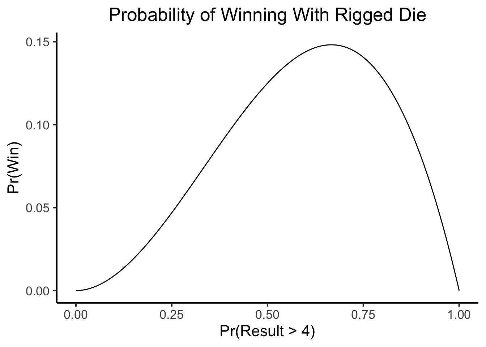

source("../../_globals.r")
library(tibble)
sample_space_df <- tibble(outcome=seq(1,6))
sample_space_df| outcome |
|---|
| 1 |
| 2 |
| 3 |
| 4 |
| 5 |
| 6 |
In several of the assignments for DSAN5100, we ask you to “compute” a probability. This can be ambiguous, as we’ve already learned several different ways to compute probabilities, so here I will try to distinguish between two different approaches to computing a probability using a computer. Hopefully it will help you in general when asking us questions, and will help us clarify which of these approaches we are looking for when we ask you to compute a probability in future assignments.
This approach implicitly assumes the naïve definition of probability, from early on in the course:
Given a sample space \(\Omega\) and an event \(E \subseteq \Omega\),
\[ \Pr(\underbrace{E}_{\mathclap{\text{event}}}) = \frac{\text{\# Outcomes in E}}{\text{\# Possible Outcomes}} = \frac{|E|}{|\Omega|} \]
It follows the following logic:
tibble, andtibble1.As a super simple example that hopefully illustrates this approach, consider the case of rolling a single die, so that the sample space is
\[ \Omega = \{1, 2, 3, 4, 5, 6\} \]
and then consider the event of interest \(E\) to be “the outcome of the roll is even”, so that
\[ E = \{2, 4, 6\} \subseteq \Omega \]
In this approach we could construct a tibble representing the entire sample space \(\Omega\) like
source("../../_globals.r")
library(tibble)
sample_space_df <- tibble(outcome=seq(1,6))
sample_space_df| outcome |
|---|
| 1 |
| 2 |
| 3 |
| 4 |
| 5 |
| 6 |
Then we could extract a subset of this tibble corresponding to the event \(E\) by selecting only those rows whose outcome value is even2:
library(dplyr)
event_df <- sample_space_df %>% filter(outcome %% 2 == 0)
event_df| outcome |
|---|
| 2 |
| 4 |
| 6 |
These two tibbles together allow us to compute a probability using the naïve definition:
nrow(event_df) / nrow(sample_space_df)[1] 0.5It’s a bit silly to use this approach to study dice, since we can figure out the probabilistic properties of dice pretty intuitively (see below), but this approach becomes more useful when we think about problems focusing on data analysis.
For example, we might give you a problem that says
Load this dataset of country/region GDP data, and keep just the observations for the year 2010. What is the probability that an entity in this dataset had a GDP lower than $10 billion, and a country code containing the letter Z, in this year?
library(readr)
library(dplyr)
library(stringr)
gdp_df <- read_csv("https://gist.githubusercontent.com/jpowerj/fecd437b96d0954893de727383f2eaf2/raw/fec58507f7095cb8341b229d6eb74ce53232d663/gdp_2010.csv")
below_10b_df <- gdp_df %>% filter(value < 10000000000)
below_10b_z_df <- below_10b_df %>% filter(str_detect(code, 'Z'))
below_10b_z_df| name | code | year | value |
|---|---|---|---|
| Belize | BLZ | 2010 | 1397113450 |
| Kyrgyz Republic | KGZ | 2010 | 4794357795 |
| Swaziland | SWZ | 2010 | 4438778424 |
So that now we could compute the probability of a country having these properties:
p_event <- nrow(below_10b_z_df) / nrow(gdp_df)
p_event[1] 0.01470588So, this approach works well when we’re dealing with nice, simple, finite sample-spacing and outcomes which are easily definable using and or or (for example), but we won’t be able to use it to handle fancier cases like continuous probability distributions.
In this approach, we basically just use R (or Python, or whatever else) as a glorified calculator. We take the hard part—reasoning about what the sample space might look like, for example, or whether events are independent—and do it in our heads, then use R to figure out what happens when we multiply/add/divide the things we already figured out.
Continuing the dice example, for instance, this approach would go something like: we ask you
What is the probability that you observe a roll greater than 4, followed by a roll less than or equal to 4, followed by a roll greater than 4?
and you reason through this like,
I already know that there are 6 outcomes, and that they’re all equally likely, so that the probability of seeing a particular outcome in \(\Omega = \{1, 2, 3, 4, 5, 6\}\) is always \(\frac{1}{6}\). Therefore I can define an event \(E_>\) representing the event of observing an outcome greater than 4, and another event \(E_\leq\) of observing an outcome less than or equal to 4. I know that
- Since the possible outcomes greater than 4 are 5 and 6, my event \(E_> = \{5, 6\}\), and since \(\Omega = \{1, 2, 3, 4, 5, 6\}\), I can compute the probability of \(E_>\) as \[ \Pr(E_>) = \frac{|E_>|}{|\Omega|} = \frac{|\{5, 6\}|}{6} = \frac{1}{3} \]
- Since the possible outcomes less than or equal to 4 are 1, 2, 3, and 4, my event \(E_\leq = \{1, 2, 3, 4\}\), so I can compute the probability of \(E_\leq\) as \[ \Pr(E_\leq) = \frac{|E_\leq|}{|\Omega|} = \frac{|\{1, 2, 3, 4|}{6} = \frac{2}{3} \]
And now I can use R with these probabilities I computed in my head to derive the probabilities of them occurring in a particular sequence:
# Encode probabilities of my two events
p_greater <- 1/3
p_less_or_equal <- 2/3
# Use them to compute the probabilities of sequences
p_sequence <- p_greater * p_less_or_equal * p_greater
p_sequence[1] 0.07407407This approach may seem boring at first, since again we could have done this just on a calculator, but it becomes interesting when we ask you to vary the numbers to see what happens to the resulting probabilities.
For example, if you wrote the above code for some problem, then in the next problem we could say “It turns out the person providing you with the dice was cheating! They rigged it so that there’s actually a 99% chance of getting a number greater than 4! Go back and compute the probability of this sequence but using the rigged die”
And then you could just change the first line of your code, and re-run the whole thing, to obtain the new probability:
p_greater <- 0.99
p_less_or_equal <- 0.01
p_sequence <- p_greater * p_less_or_equal * p_greater
p_sequence[1] 0.009801Finally, we might then ask you something like:
“Your friend actually invented a machine that can generated any rigged die at all, so that the probability of rolling a number greater than 4 is whatever they want it to be.
You are worried because you always play a game with this friend where you win if you roll something greater than 4, then less than or equal to 4, then greater than 4. So you want to see how the friend’s rigging machine could affect your likelihood of winning.
Write a function that computes your likelihood of winning (i.e., your likelihood of getting this sequence of three rolls), for any die with any probability of producing an outcome greater than 4.
In this case, you could now take your code and transform it into a function, like
compute_win_prob <- function(p_greater) {
p_less_or_equal <- 1 - p_greater
p_sequence <- p_greater * p_less_or_equal * p_greater
return(p_sequence)
}And then test it on some values:
compute_win_prob(0.01)[1] 9.9e-05compute_win_prob(0.5)[1] 0.125compute_win_prob(0.99)[1] 0.009801Then we could ask you to think about
What value for p_greater do you think would maximize your probability of winning?
and then
Produce a plot showing your likelihood of winning for 1000 different values of p_greater, evenly spread between 0 and 1
and you could use the function you wrote like
library(ggplot2)
p_greater_vals <- seq(from = 0, to = 1, length.out = 1000)
#p_greater_vals
win_prob_vals <- sapply(p_greater_vals, compute_win_prob)
win_df <- tibble(p_greater=p_greater_vals, win_prob=win_prob_vals)
ggplot(win_df, aes(x=p_greater, y=win_prob)) +
geom_line() +
dsan_theme("full") +
labs(
title = "Probability of Winning With Rigged Die",
x = "Pr(Result > 4)",
y = "Pr(Win)"
)
And finally, we could ask you to draw a conclusion about this situation:
Looking at the plot, approximately what value for the rigged die looks like it produces the maximum likelihood of winning? Now write code to compute the actual value, out of the 1000 evenly-spaced values you computed the win probability for, that maximizes your probability of winning. Does it match your guess from earlier?
For which you could write code like
max_prob <- max(win_df$win_prob)
max_row <- win_df %>% filter(win_prob == max_prob)
max_row| p_greater | win_prob |
|---|---|
| 0.6666667 | 0.1481481 |
My point in writing all this out is just to say: that was a whole other way to compute probabilities using a computer, where the focus wasn’t on making a big tibble and then extracting smaller chunks out of it and dividing their sizes. We did have to construct a tibble, in order to compute the win probabilities for a spectrum of values, but that was just so we could generate a plot (since ggplot() needed to know specifically what points to put at what coordinates).
So, in this approach, we don’t have a single tibble throughout the entire problem that serves as our sample space. We just use tibbles when we need them, as tools for doing math or making plots, while the probabilities themselves are still getting computed using simple multiplication.
And, I mentioned above how the tibble-subsetting method doesn’t allow us to deal with continuous probability distributions. We’ve now seen, on the other hand, how this “fancy calculator” approach is able to deal with such distributions: we were really looking at the distribution of all possible rigged dice, meaning, the space of all dice with \(\Pr(\text{roll greater than 4}) = p\) for \(p \in [0,1]\). We had to approximate this continuous space using a grid of 1000 samples, which brought us closer to the fancy-spreadsheet approach, but hopefully this can help make it a bit clearer how the fancy-calculator approach can help us when the fancy-spreadsheet approach can’t, even if it (the fancy-calculator approach) requires us to do a lot more math in our heads.
If you’re a Python absolutist, you can take tibble here and replace it with pd.DataFrame, for example. If you’re a base-R absolutist you can replace it with data.frame.↩︎
The %% operator in R performs modular division: a %% b produces the remainder after dividing a by b (for example, 7 %% 3 produces 1).↩︎